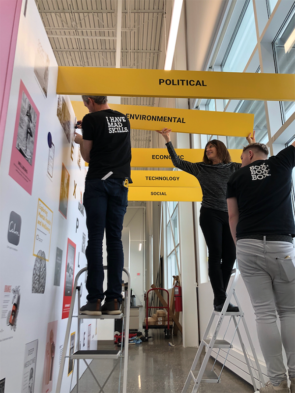
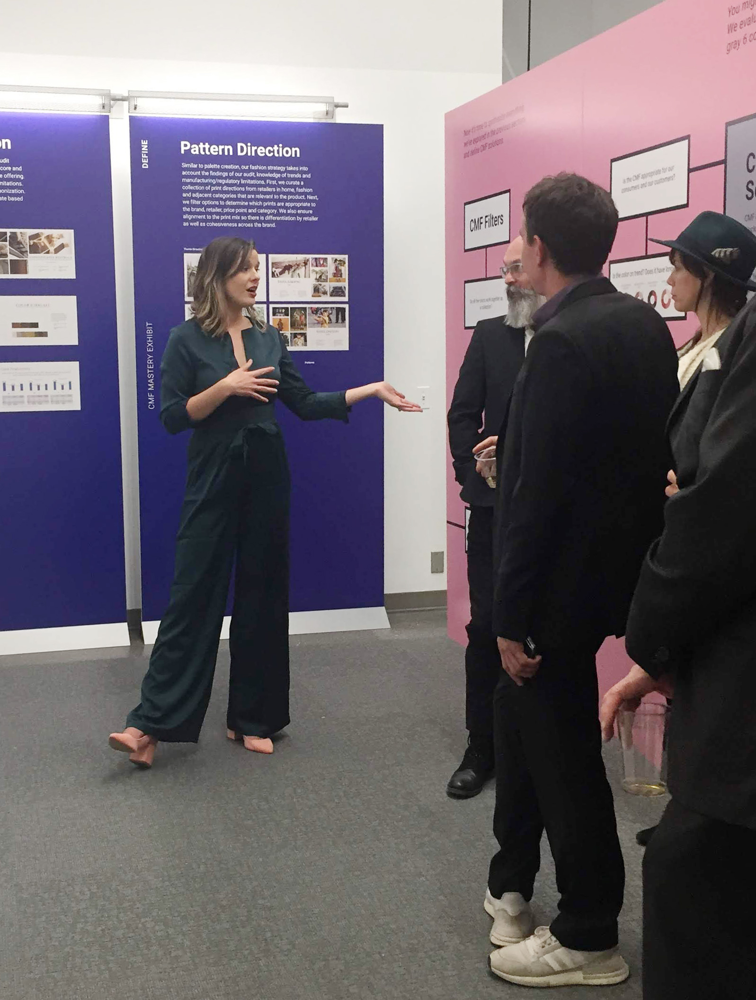
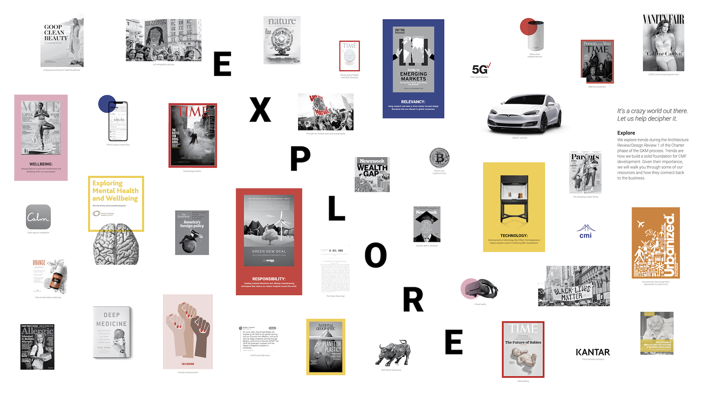
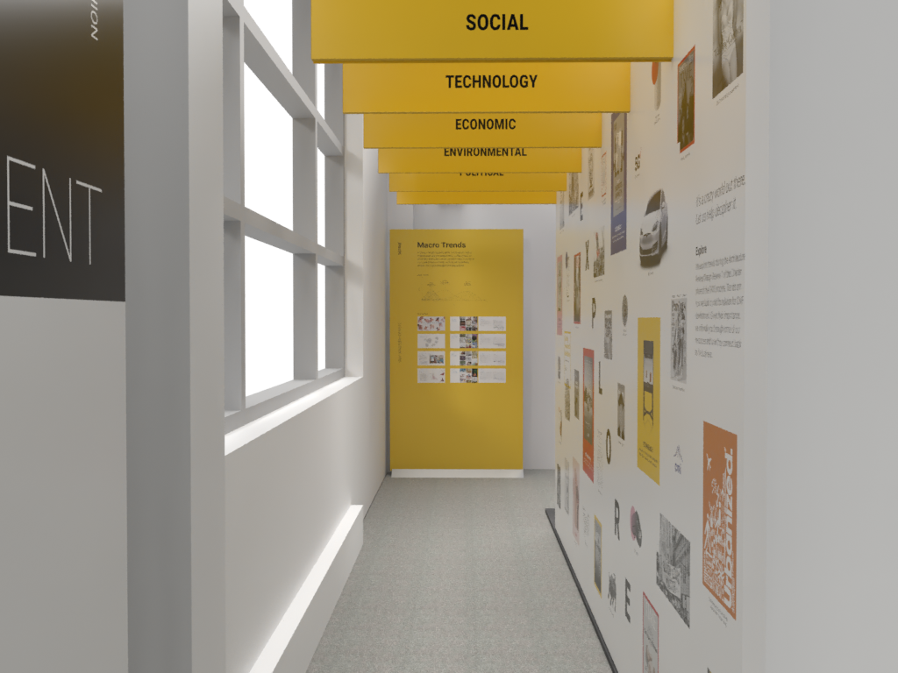
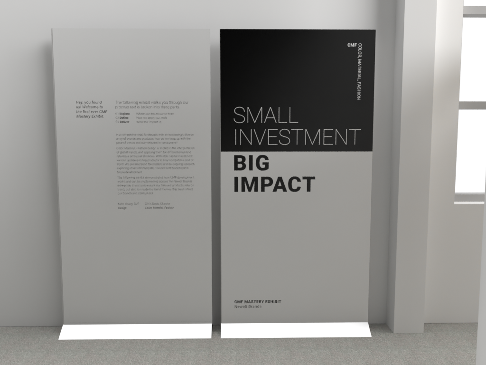
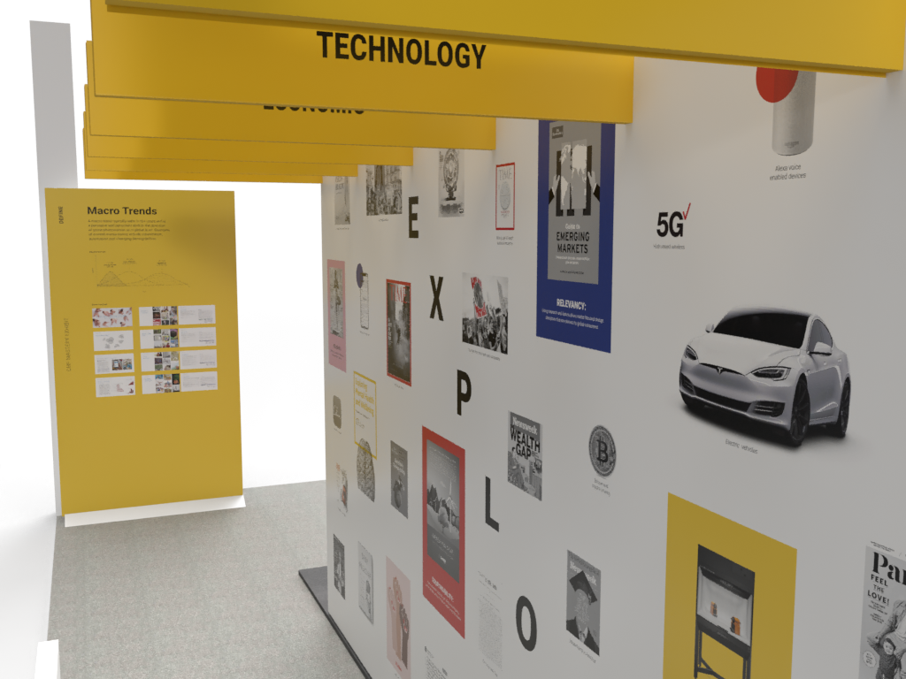
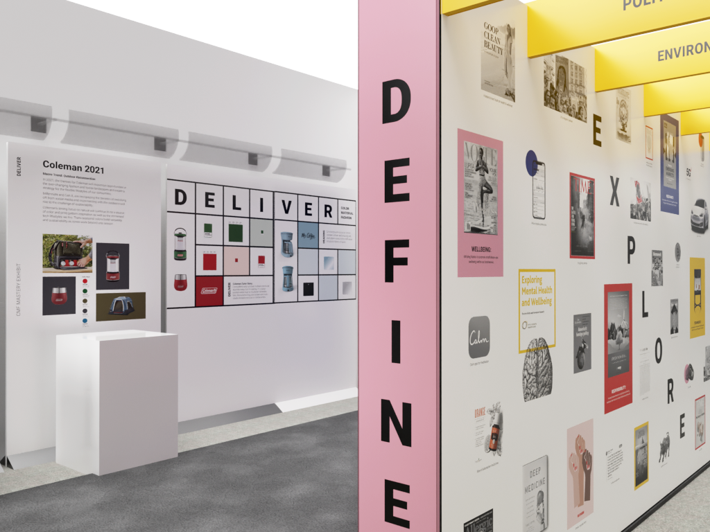
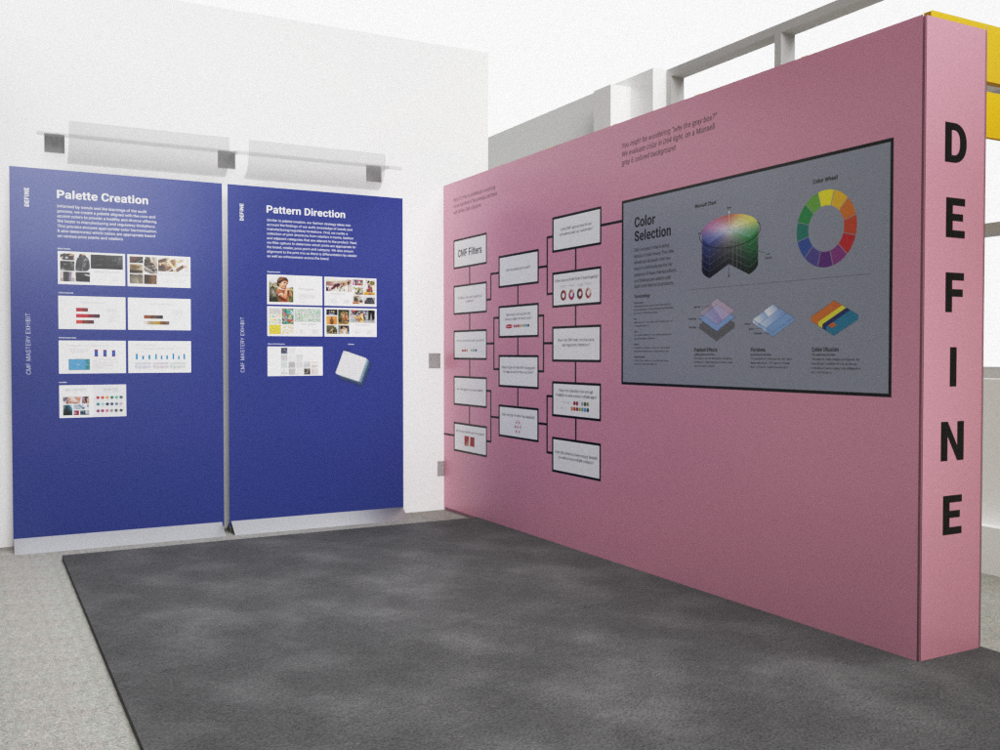
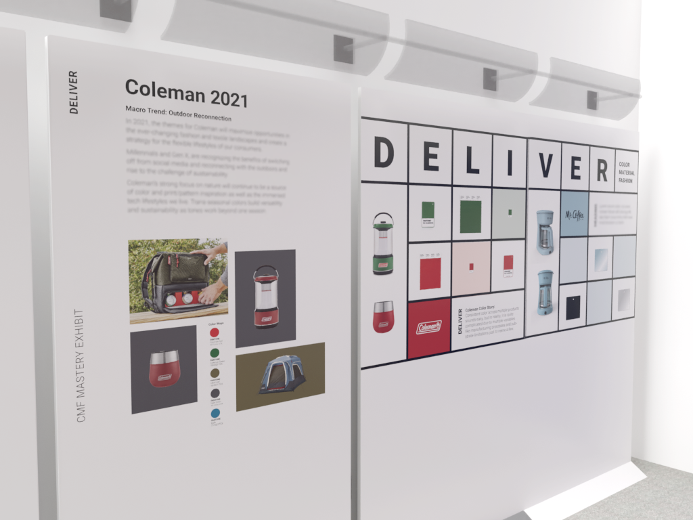
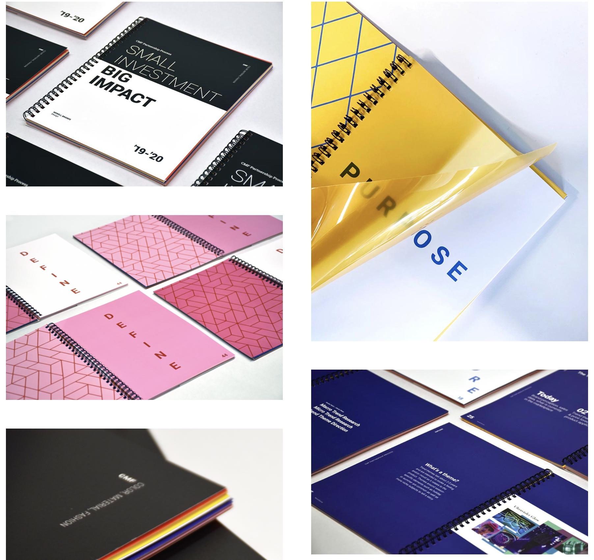

The Business Problem
Inside Newell Brands' industrial design organization sat a small, highly specialized team focused on Color, Material, and Finish. CMF is the discipline that makes products more desirable: the exact shade of blue on a water bottle, the tactile finish of a camping stove, the material quality that signals premium without saying a word. These choices directly influence purchasing decisions and competitive positioning.
Yet the people who most needed to champion and invest in this work, executive leadership and brand marketing, didn't fully understand it. The business case was invisible because the craft itself was invisible.
How might we help the company understand the impact of CMF on the business? The best way is to walk them through it. Literally.
Who Was Involved
My team. We owned the research, ideation, and vision for the exhibit and were responsible for translating the CMF process into a compelling experience strategy.
The expert practitioners whose work was being showcased: trend forecasters, color specialists, material researchers.
Physical display fabricators who built and installed the exhibit environment.
The primary audience. Senior leaders who needed to understand CMF's strategic value to the business.
Secondary audience. Brand teams whose product decisions are directly influenced by CMF direction.


Creative Director
I led the creative direction for the entire project, covering both the physical exhibit and the companion publication. That meant researching the CMF discipline alongside the professional team to deeply understand their process, then translating that understanding into a visual and spatial language that would communicate it to a non-specialist audience.
My responsibilities spanned two tracks in parallel:
Embedded with the CMF team to understand their full process, from trend forecasting through material selection to product application.
Developed the graphic language and visual approach for the physical space. Directed the external fabrication agency through build-out.
Designed and produced a printed companion book that carried the same conceptual principles through a tactile, material-forward artifact.
Structured the visitor journey so that the physical sequence of the exhibit told a complete, convincing story about CMF's business value.

Small Investment. Big Impact.
The CMF team's work touched every product in Newell Brands' portfolio, yet it operated with modest resources relative to its influence. Color, material, and finish choices are among the most powerful drivers of perceived quality, brand differentiation, and purchase intent. A consumer doesn't think "I chose this water bottle because of its color palette." They just reach for it.
Making that value legible to decision-makers required a different strategy than a presentation deck. It required experience. The exhibit needed to do what CMF itself does: make something undeniably desirable through the choices most people never consciously analyze.
Don't explain CMF. Make them feel it. An immersive exhibit walk-through, reinforced by a companion publication, both designed to embody the very principles they describe.
What Success Looked Like
Leadership leaves understanding not just what CMF is, but why it matters to their competitive position.
The CMF team is seen as strategic forecasters, not just aesthetic decision-makers.
The printed publication extends the story beyond the exhibit. Something to take, reference, and share.
A Walk Through the CMF Process
The exhibit was designed as a sequential journey. Visitors physically moved through the CMF process from start to finish. The spatial sequence was the story. Each zone corresponded to a stage in how CMF work actually happens, so by the time visitors arrived at the product showcases, they had earned that context.
Visitors walk through an immersive tunnel wrapping them in trend categories, the macro signals that CMF teams track to forecast the future.
Rounding the corner reveals how CMF defines design solutions, translating trend synthesis into material direction.
Visitors pass through color selection, pattern creation, and product application: the hands-on craft behind CMF decisions.
Real products on pedestals with case studies breaking down CMF selection choices for Coleman outdoor and Contigo water bottles.

The Gallery





A Book That Embodies Its Subject
The companion publication wasn't a leave-behind brochure. It was a design object in its own right. The strategy was to make the book demonstrate the CMF principle it was communicating: that deliberate choices about color, material, and finish create emotional impact.
The outside cover is black and white. Understated. Unassuming. Open it, and the interior erupts with pops of color, layered patterns, and transparent finished materials throughout. The reveal is the message.
